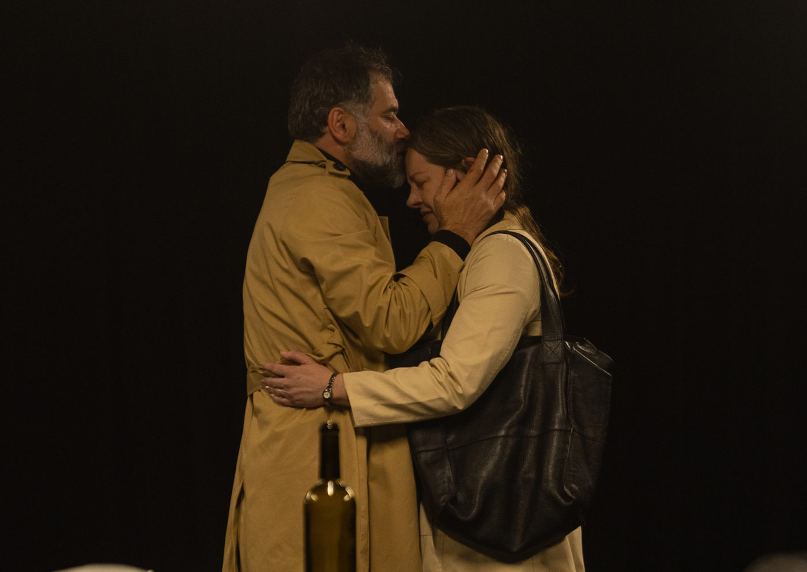

Veneno, de Lot Vekemans, retorna ao Teatro Estúdio em nova temporada com Cléo De Páris e Alexandre Galindo

Após temporada de grande repercussão, a peça Veneno, da premiada dramaturga holandesa Lot Vekemans, volta ao palco do Teatro Estúdio, em São Paulo, de 8 a 30 de setembro de 2025, com apresentações às segundas e terças-feiras, sempre às 20h.
A montagem brasileira é dirigida por Eric Lenate e estrelada por Cléo De Páris e Alexandre Galindo – este último indicado ao Prêmio Shell de Melhor Ator justamente por sua interpretação no espetáculo.
Presente em mais de 30 países, “Veneno” (ou “Gif”, no título original em holandês) é considerada uma das obras mais contundentes da dramaturgia contemporânea sobre o luto. O texto, traduzido por Mariângela Guimarães, já rendeu à autora prêmios internacionais, entre eles o Taalunie Toneelschrijftprijs em 2010. Recentemente, a obra ganhou também uma adaptação para o cinema, lançada em 2024, dirigida pela alemã Désirée Nosbusch e estrelada por Tim Roth e Trine Dyrholm.
Uma história sobre luto, amor e reconciliação
Na trama, um casal separado se reencontra dez anos após a morte do filho, diante da necessidade de remover o corpo do cemitério onde está enterrado, devido à contaminação por veneno no solo. O encontro, permeado por memórias e confissões, expõe feridas profundas e confronta os dois personagens com suas formas distintas de lidar com a dor.
A peça levanta uma questão universal: existe tempo certo para superar o luto? A resposta, como demonstra a dramaturgia de Vekemans, não é única. Cada personagem transita por lembranças ternas e duras, revelando o abismo entre a aceitação e a permanência da dor.
Segundo o diretor Eric Lenate, um dos grandes méritos do texto é equilibrar emoção intensa e momentos de humor cotidiano:
“Entre confissões dilacerantes, os personagens também falam sobre o clima ou o café. Essa leveza evita o melodrama e torna os momentos dramáticos ainda mais impactantes.”
A força da dramaturgia de Lot Vekemans
Lot Vekemans é hoje uma das autoras mais reconhecidas da Europa. Desde 1995, construiu carreira sólida com peças que discutem temas como perda, identidade e relações humanas. Sua escrita é marcada pela delicadeza e pela profundidade psicológica dos personagens, sempre apresentados em sua complexidade – ora ternos, ora cruéis.
No caso de Veneno, a dramaturga oferece um estudo meticuloso sobre o luto, mas também sobre a possibilidade de reconciliação e de ressignificação da dor.
Serviço
Espetáculo: Veneno, de Lot Vekemans
Temporada: 8 a 30 de setembro de 2025, às segundas e terças-feiras, às 20h
Local: Teatro Estúdio – Rua Conselheiro Nébias, 891, Campos Elíseos – São Paulo (SP)
Ingressos: R$80 (inteira) | R$40 (meia)
Promocional com valet: R$105 (inteira + valet) | R$65 (meia + valet)
Vendas online: Sympla
Bilheteria: aberta duas horas antes das sessões
Telefone: (21) 99690-9699
Duração: 90 minutos
Classificação: 14 anos
Lotação: 112 lugares